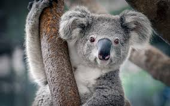

Page 3 of 3
First page of hw
Second page of hw (3 links to photos on this page)
reserved
Compare
\
Owls
Cats
Koals

Плюсы
Летают
Урчат, милые
Минусы
Охотятся по ночам
Играются пакетами
Едят все
Остались вопросы по ДЗ:
Все ли сделано правильно?
Можно ли подглядывать к другим в гитхаб?
Домашние задания обладают свойством преемственности -- т.е. первые домашки я должен делать с опционом на то, что дальше на эту основу будет натягиваться следующие домашки?
(c)
t.me/gapess